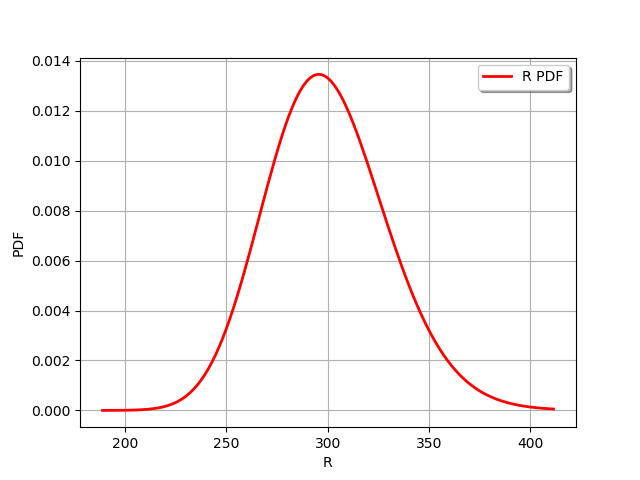
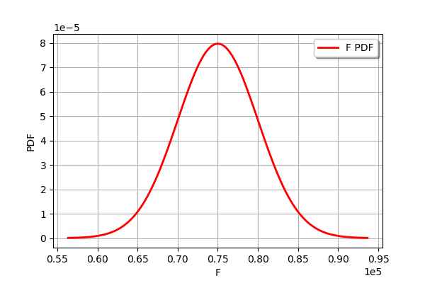
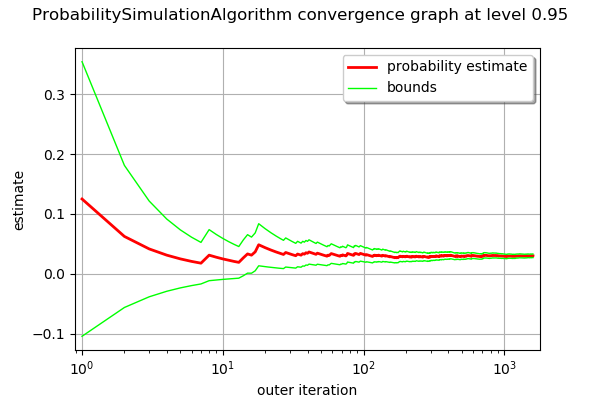
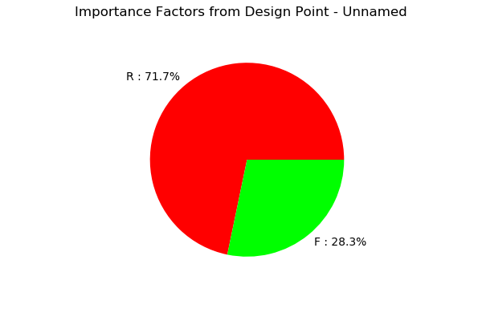
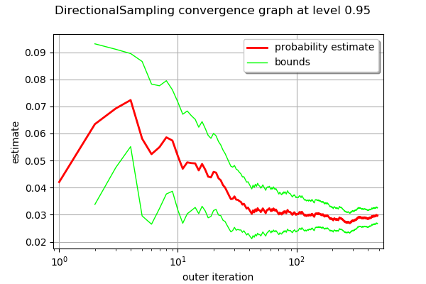

Axial stressed beam : comparing different methods to estimate a probability¶
In this example, we compare four methods to estimate the probability in the axial stressed beam example: * Monte-Carlo simulation, * FORM, * directional sampling, * importance sampling with FORM design point: FORM-IS.
Introduction¶
We consider a simple beam stressed by a traction load F at both sides.
The geometry is supposed to be deterministic: the diameter D is equal to:

By definition, the yield stress is the load divided by the surface. Since the surface is  , the stress is:
, the stress is:

Failure occurs when the beam plastifies, i.e. when the axial stress gets larger than the yield stress:

where  is the strength.
is the strength.
Therefore, the limit state function  is:
is:

for any  .
.
The value of the parameter  is such that:
is such that:

which leads to the equation:

We consider the following distribution functions.
Variable |
Distribution |
|---|---|
R |
LogNormal( |
F |
Normal( |
 ,
,  ) [Pa]
) [Pa] ,
,  ) [N]
) [N]where  and
and  are the mean and the variance of .
are the mean and the variance of .
The failure probability is:

The exact  is
is

Define the model¶
[1]:
from __future__ import print_function
import openturns as ot
Define the dimension of the problem and the model.
[2]:
dim = 2
limitStateFunction = ot.SymbolicFunction(['R', 'F'], ['R-F/(pi_*100.0)'])
Test of the limit state function.
[3]:
x = [300., 75000.]
print('x=', x)
print('G(x)=', limitStateFunction(x))
x= [300.0, 75000.0]
G(x)= [61.2676]
Then we define the probabilistic model. Create a first marginal: LogNormal distribution 1D, parameterized by its mean and standard deviation.
[4]:
R_dist = ot.LogNormalMuSigma(300.0, 30.0, 0.0).getDistribution()
R_dist.setName('Yield strength')
R_dist.setDescription('R')
R_dist.drawPDF()
[4]:

Create a second marginal: Normal distribution 1D.
[5]:
F_dist = ot.Normal(75000., 5000.)
F_dist.setName('Traction_load')
F_dist.setDescription('F')
F_dist.drawPDF()
[5]:

Create a IndependentCopula.
[6]:
aCopula = ot.IndependentCopula(dim)
aCopula.setName('Independent copula')
# Instanciate one distribution object
myDistribution = ot.ComposedDistribution([R_dist, F_dist], aCopula)
myDistribution.setName('myDist')
Given that the copula is independent by default, we can as well use only the first argument of the ComposedDistribution class.
[7]:
myDistribution = ot.ComposedDistribution([R_dist, F_dist])
myDistribution.setName('myDist')
We create a RandomVector from the Distribution, then a composite random vector. Finally, we create a ThresholdEvent from this RandomVector.
[8]:
inputRandomVector = ot.RandomVector(myDistribution)
outputRandomVector = ot.CompositeRandomVector(limitStateFunction, inputRandomVector)
myEvent = ot.ThresholdEvent(outputRandomVector, ot.Less(), 0.0)
Using Monte Carlo simulations¶
[9]:
cv = 0.05
NbSim = 100000
experiment = ot.MonteCarloExperiment()
algoMC = ot.ProbabilitySimulationAlgorithm(myEvent, experiment)
algoMC.setMaximumOuterSampling(NbSim)
algoMC.setBlockSize(1)
algoMC.setMaximumCoefficientOfVariation(cv)
[10]:
# For statistics about the algorithm
initialNumberOfCall = limitStateFunction.getEvaluationCallsNumber()
Perform the analysis.
[11]:
algoMC.run()
[12]:
result = algoMC.getResult()
probabilityMonteCarlo = result.getProbabilityEstimate()
numberOfFunctionEvaluationsMonteCarlo = limitStateFunction.getEvaluationCallsNumber() - initialNumberOfCall
print('Number of calls to the limit state =', numberOfFunctionEvaluationsMonteCarlo)
print('Pf = ', probabilityMonteCarlo)
print('CV =', result.getCoefficientOfVariation())
Number of calls to the limit state = 12806
Pf = 0.03029829767296579
CV = 0.04999231132448775
[13]:
graph = algoMC.drawProbabilityConvergence()
graph.setLogScale(ot.GraphImplementation.LOGX)
graph
[13]:

Using FORM analysis¶
[14]:
# We create a NearestPoint algorithm
myCobyla = ot.Cobyla()
# Resolution options:
eps = 1e-3
myCobyla.setMaximumEvaluationNumber(100)
myCobyla.setMaximumAbsoluteError(eps)
myCobyla.setMaximumRelativeError(eps)
myCobyla.setMaximumResidualError(eps)
myCobyla.setMaximumConstraintError(eps)
[15]:
# For statistics about the algorithm
initialNumberOfCall = limitStateFunction.getEvaluationCallsNumber()
We create a FORM algorithm. The first parameter is a NearestPointAlgorithm. The second parameter is an event. The third parameter is a starting point for the design point research.
[16]:
algoFORM = ot.FORM(myCobyla, myEvent, myDistribution.getMean())
Perform the analysis.
[17]:
algoFORM.run()
[18]:
resultFORM = algoFORM.getResult()
numberOfFunctionEvaluationsFORM = limitStateFunction.getEvaluationCallsNumber() - initialNumberOfCall
probabilityFORM = resultFORM.getEventProbability()
print('Number of calls to the limit state =', numberOfFunctionEvaluationsFORM)
print('Pf =', probabilityFORM)
Number of calls to the limit state = 98
Pf = 0.02998503189125796
[19]:
resultFORM.drawImportanceFactors()
[19]:

Using Directional sampling¶
[20]:
# Resolution options:
cv = 0.05
NbSim = 10000
algoDS = ot.DirectionalSampling(myEvent)
algoDS.setMaximumOuterSampling(NbSim)
algoDS.setBlockSize(1)
algoDS.setMaximumCoefficientOfVariation(cv)
[21]:
# For statistics about the algorithm
initialNumberOfCall = limitStateFunction.getEvaluationCallsNumber()
Perform the analysis.
[22]:
algoDS.run()
[23]:
result = algoDS.getResult()
probabilityDirectionalSampling = result.getProbabilityEstimate()
numberOfFunctionEvaluationsDirectionalSampling = limitStateFunction.getEvaluationCallsNumber() - initialNumberOfCall
print('Number of calls to the limit state =', numberOfFunctionEvaluationsDirectionalSampling)
print('Pf = ', probabilityDirectionalSampling)
print('CV =', result.getCoefficientOfVariation())
Number of calls to the limit state = 8830
Pf = 0.02973057550733805
CV = 0.04991717114882535
[24]:
graph = algoDS.drawProbabilityConvergence()
graph.setLogScale(ot.GraphImplementation.LOGX)
graph
[24]:

Using importance sampling with FORM design point: FORM-IS¶
The getStandardSpaceDesignPoint method returns the design point in the U-space.
[25]:
standardSpaceDesignPoint = resultFORM.getStandardSpaceDesignPoint()
standardSpaceDesignPoint
[25]:
[-1.59323,0.999915]
The key point is to define the importance distribution in the U-space. To define it, we use a multivariate standard Gaussian and configure it so that the center is equal to the design point in the U-space.
[26]:
dimension = myDistribution.getDimension()
dimension
[26]:
2
[27]:
myImportance = ot.Normal(dimension)
myImportance.setMean(standardSpaceDesignPoint)
myImportance
[27]:
Normal(mu = [-1.59323,0.999915], sigma = [1,1], R = [[ 1 0 ]
[ 0 1 ]])
Create the design of experiment corresponding to importance sampling. This generates a WeightedExperiment with weights corresponding to the importance distribution.
[28]:
experiment = ot.ImportanceSamplingExperiment(myImportance)
Create the standard event corresponding to the event. This transforms the original problem into the U-space, with Gaussian independent marginals.
[29]:
standardEvent = ot.StandardEvent(myEvent)
We then create the simulation algorithm.
[30]:
algo = ot.ProbabilitySimulationAlgorithm(standardEvent, experiment)
algo.setMaximumCoefficientOfVariation(cv)
algo.setMaximumOuterSampling(40000)
[31]:
# For statistics about the algorithm
initialNumberOfCall = limitStateFunction.getEvaluationCallsNumber()
[32]:
algo.run()
[33]:
# retrieve results
result = algo.getResult()
probabilityFORMIS = result.getProbabilityEstimate()
numberOfFunctionEvaluationsFORMIS = limitStateFunction.getEvaluationCallsNumber() - initialNumberOfCall
print('Number of calls to the limit state =', numberOfFunctionEvaluationsFORMIS)
print('Pf = ', probabilityFORMIS)
print('CV =', result.getCoefficientOfVariation())
Number of calls to the limit state = 893
Pf = 0.029421203039895906
CV = 0.0499720508995338
Conclusion¶
We now compare the different methods in terms of accuracy and speed.
[34]:
import numpy as np
The following function computes the number of correct base-10 digits in the computed result compared to the exact result.
[35]:
def computeLogRelativeError(exact, computed):
logRelativeError = -np.log10(abs(exact - computed) / abs(exact))
return logRelativeError
The following function prints the results.
[36]:
def printMethodSummary(name, computedProbability, numberOfFunctionEvaluations):
print("---")
print(name,":")
print('Number of calls to the limit state =', numberOfFunctionEvaluations)
print('Pf = ', computedProbability)
exactProbability = 0.02919819462483051
logRelativeError = computeLogRelativeError(exactProbability, computedProbability)
print("Number of correct digits=%.3f" % (logRelativeError))
performance = logRelativeError/numberOfFunctionEvaluations
print("Performance=%.2e (correct digits/evaluation)" % (performance))
return
[37]:
printMethodSummary("Monte-Carlo", probabilityMonteCarlo, numberOfFunctionEvaluationsMonteCarlo)
printMethodSummary("FORM", probabilityFORM, numberOfFunctionEvaluationsFORM)
printMethodSummary("DirectionalSampling", probabilityDirectionalSampling, numberOfFunctionEvaluationsDirectionalSampling)
printMethodSummary("FORM-IS", probabilityFORMIS, numberOfFunctionEvaluationsFORMIS)
---
Monte-Carlo :
Number of calls to the limit state = 12806
Pf = 0.03029829767296579
Number of correct digits=1.424
Performance=1.11e-04 (correct digits/evaluation)
---
FORM :
Number of calls to the limit state = 98
Pf = 0.02998503189125796
Number of correct digits=1.569
Performance=1.60e-02 (correct digits/evaluation)
---
DirectionalSampling :
Number of calls to the limit state = 8830
Pf = 0.02973057550733805
Number of correct digits=1.739
Performance=1.97e-04 (correct digits/evaluation)
---
FORM-IS :
Number of calls to the limit state = 893
Pf = 0.029421203039895906
Number of correct digits=2.117
Performance=2.37e-03 (correct digits/evaluation)
We see that all three methods produce the correct probability, but not with the same accuracy. In this case, we have found the correct order of magnitude of the probability, i.e. between one and two correct digits. There is, however, a significant difference in computational performance (measured here by the number of function evaluations).
The fastest method is the FORM method, which produces more than 1 correct digit with less than 98 function evaluations with a performance equal to (correct digits/evaluation). A practical limitation is that the FORM method does not produce a confidence interval: there is no guarantee that the computed probability is correct.
The slowest method is Monte-Carlo simulation, which produces more than 1 correct digit with 12806 function evaluations. This is associated with a very slow performance equal to (correct digits/evaluation). The interesting point with the Monte-Carlo simulation is that the method produces a confidence interval.
The DirectionalSampling method is somewhat in-between the two previous methods.
The FORM-IS method produces 2 correct digits and has a small number of function evaluations. It has an intermediate performance equal to (correct digits/evaluation). It combines the best of the both worlds: it has the small number of function evaluation of FORM computation and the confidence interval of Monte-Carlo simulation.